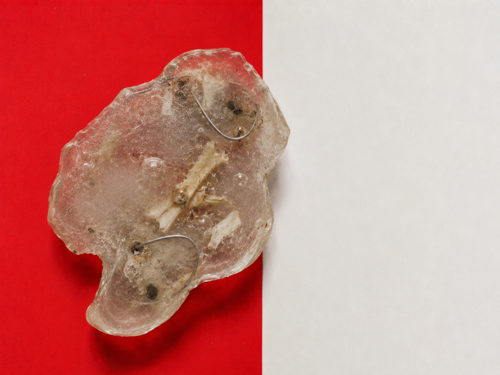
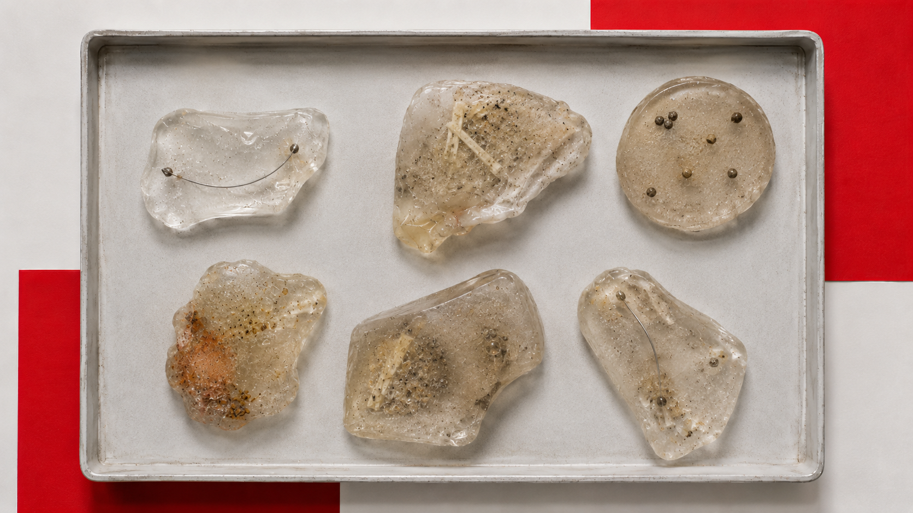
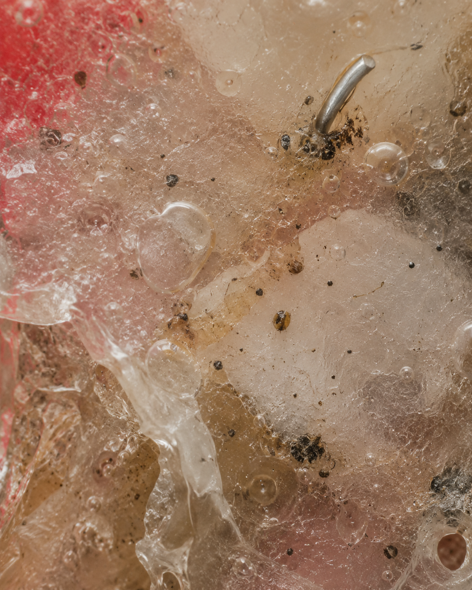
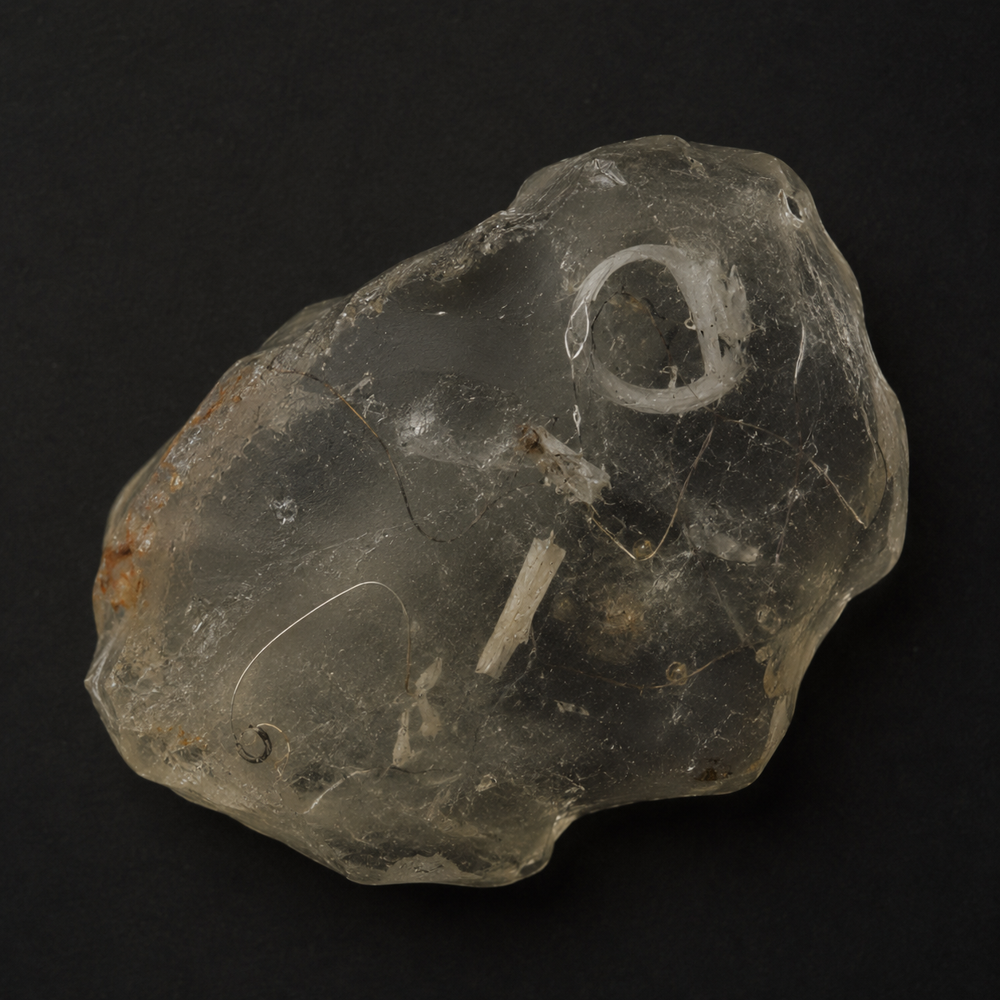
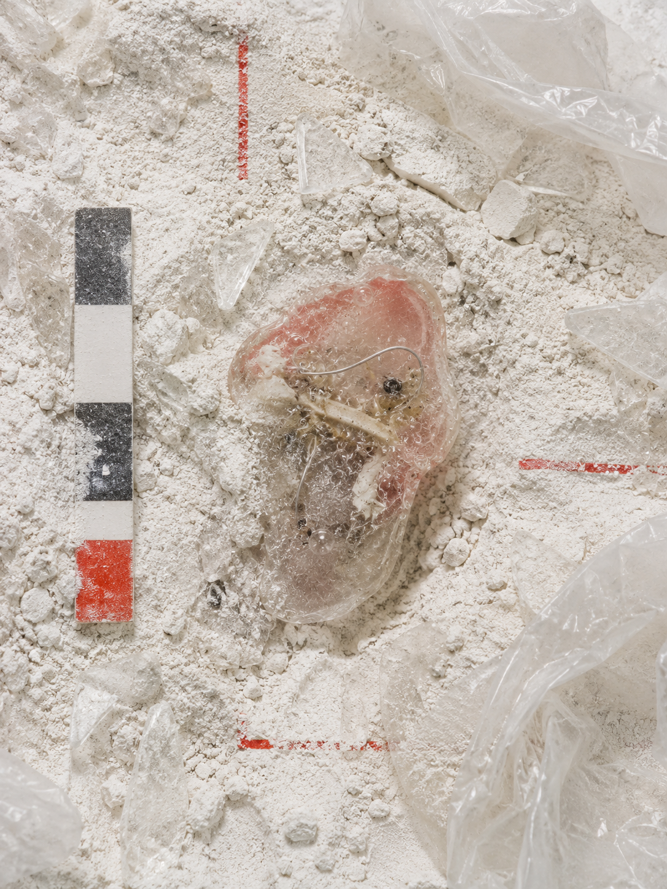

视觉方法 / PROCESS
从材料筛选、结构组合到浇注和编号，过程图记录标本如何逐步获得化石外观。
A04 · IMAGE
合成化石
以人工材料伪造不存在的遗迹。

“A04 SYNTHETIC FOSSILS｜合成化石”以不存在的生物遗迹为研究对象，使用树脂、硅胶、金属丝、种子与日常碎片进行包埋、压制、缠绕和编号记录。成品在化石切片、标本盒与考古档案之间形成模糊状态，呈现人工结构被保存、误读和重新分类的过程。项目试图讨论：当未来的观察者只面对残留物时，生命、制造物与证据之间的边界如何被判断。
从材料筛选、结构组合到浇注和编号，过程图记录标本如何逐步获得化石外观。
在制作时刻意保留了气泡、裂缝和金属丝的连接点，这正是以赝品为主题的项目需要继续测试的部分。



